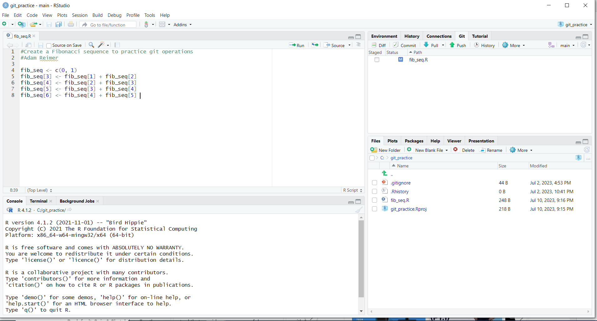
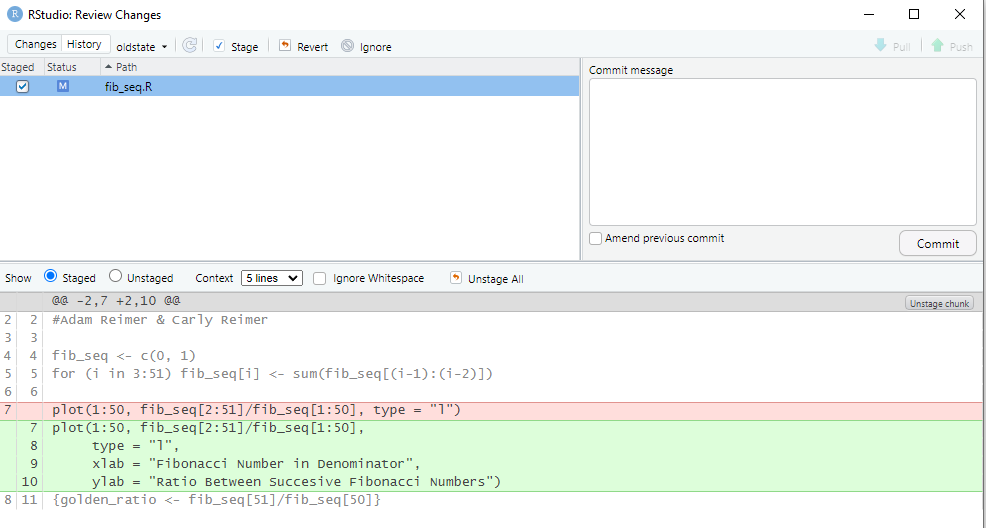
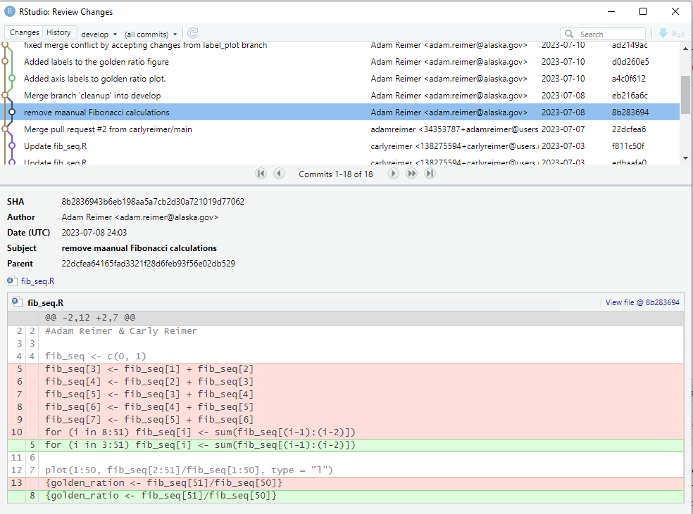

The RStudio Graphical User Interface
Congratulations! If you are reading this you have done your homework and earned the right to confidently use a graphical user interface to simplify the most common Git tasks. Using a GUI can save a lot of keystrokes for most commands. The most accessible GUI is found in RStudio itself. A Git tab will show up in the Environment/History/Connections/Tutorial window (generally the upper left hand quadrant) provided your directory is a Git repository.

git init
If you are starting a brand new analysis, creating a git repository at the same time you create your R studio project is easy: New Project>New Directory>New Project>(provide name, location and check ‘create git repository’). This sequence runs git init in the background while the RStudio project is created.
Commands accessible through the Git tab
git add- add/Stage files by clicking the radio button next to each file in the RStudio Git pane.git diff- the Diff button will lead to another screen where the GUI allows users todiffandcommitthe repository.git commit- the Commit button will lead to another screen where the GUI allows users tocommitanddiffthe repository.git pull- the Pull button allows the user to pull commits from the remote repository to the local repository.git push- the Push button allows the user to push commits from the local repository to the remote repository.git log- the History button will lead to another screen where the GUI allows users tologthe repository.git revert- the More button will allow the user toreverta commit. It also allows the user to add files to the.gitignorefile by clicking the radio button next to the files you wish to ignore.git checkout -bandgit remote- the flowchart shaped button will allow you to create a new branch and add a remote to the repository.git checkout <new_branch>- the drop down list next to the word “main” will allow you to switch between branches.Note the RStudio GUI is frequently slow to react to changes. The circular arrow refreshes the GUI. Often it will look like nothing is happening when you are clicking the radio buttons to add/stage files but clicking the refresh button will reveal the buttons were checked.

Commands accessible through the Diff window
git diff- the Changes tab will show line by line changes associated with the files in the working directory relative to the most recent commit. Old lines are shown in red while new line are shown in green. In the example shown below x- and y-axis labels are added to the plot function.git commit- the Changes tab also includes a commit message window and a Commit button allowing the user to commit all of the staged changes. The commit title goes on the first line of the message window, followed by a blank line. The third line and onward contain the commit description.

Commands accessible through the History window
git log- the History tab will show the list of prior commits and the line by line changes associated with each file included in each commit. In the example below manual Fibonacci sequence calculations were replaced with a for loop and a typo was corrected in the word “ratio”.git checkout- RStudio does not have a direct analog to usinggit checkoutto recall a single file but the View file @SHA-short button will open a window which includes the code that was staged and committed during that SHA . It is possible to retrieve code from a previous commit in this manner using cut, paste and save point and click commands.

Commands not accessible using the RStudio GUI
To my knowledge there are certain commands that are not included in RStudio GUI.
git mergetwo branches. Since branching and merging is a big part of using git for model development this is a major omission. The GitKraken GUI handles merges nicely.The Rstudio GUI display the Git log in a much cleaner format than the terminal with the big exception that the commit description is not visible. Since the commit description is the more informative part of the commit message this can be a substantial loss for some commits. A workaround would is to run the command
git show SHA-short -s –format=%Bwhere SHA-short is the short SHA tag for the commit description you wish to see. More powerful GUI’s (for example, GitKraken) can show the entire commit description.git checkoutto recall a single file from a previous commit. Using the terminal is more deliberate and proably better if you want to recall all of a large file although the cut/paste workaround described above is generally sufficent if you just want t few lines of code from a previous commit.git checkoutto recall a prior commit to your working directory.git resetto delete a local commit.